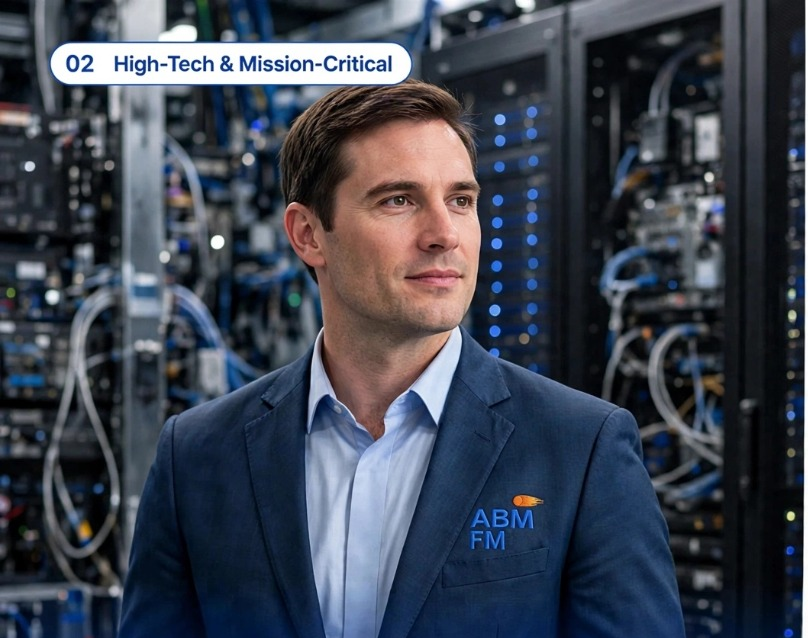

02 High-Tech & Mission-Critical Facilities
Powering Uptime. Protecting Criticality. Ensuring Resilience.

Powering Uptime.
Protecting Criticality. Ensuring Resilience.
High-Tech & Mission-Critical Facilities
Our specialist facilities management services are tailored to the rigorous demands of high-tech and mission-critical environments, where downtime is not an option and reliability is paramount. We provide comprehensive MEP infrastructure management for data centres, ensuring seamless operations and compliance with stringent industry standards to safeguard critical technology assets.
From backup power systems to precision environmental controls, our team delivers proactive maintenance and 24/7 monitoring across UPS, battery storage, diesel generators, ATS/STS switchgear, and precision air conditioning to maintain optimal conditions and uninterrupted power. We combine technical expertise with rigorous risk management protocols to protect your infrastructure around the clock.
We ensure 100% uptime with redundant power, cooling, and fire protection for mission-critical environments
Data Centre MEP Infrastructure
Backup Power • UPS • Batteries • Diesal Generators • ATS/STS
Precision Air Conditioning System
Fire Alarm • VESDA • FM-200 • Noves • Inert Gas • Sprinklers
Environmental Monitoring
Uptime & Redundancy
Critical Power Management
Risk & Resilience
To ensure 100% uptime and resilience for mission-critical operations